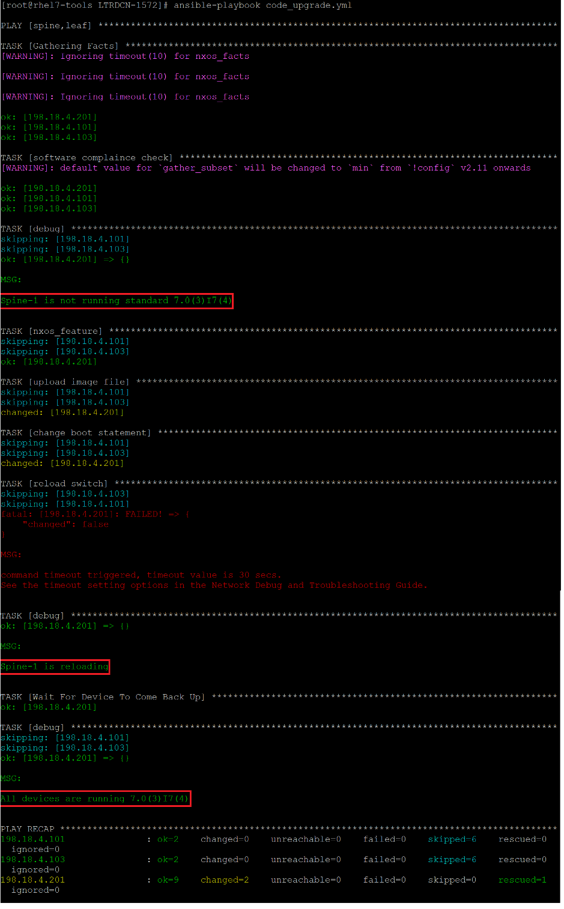

Appendix B: Software compliance check and remediation
In this section, we will run software version compliance check using Ansible. For fabric switch that is not running on standard software version, we will perform software upgrade and bring all fabric switches into the standard version.
In this playbook, we will use “nxos_facts” to find the software version on each fabric switch. Then we will compare with standard software version, 7.0(3)I7(4) in this lab. For fabric switch that is not running on standard version, the playbook will upgrade and reboot the switch.
The playbook will use “nxos_file_copy” module to copy image from remote repository to bootflash. A bug fix is introduced in Ansible 2.9 and upward to avoid timeout issue when coping large file, so fist we will upgrade ansible to 2.9.1
- On Ansible server execute command
pip install ansible==2.9.1to upgrade Ansible to 2.9.1 release:
[root@rhel7-tools LTRDCN-1572]# pip install ansible==2.9.1
- On Atom, open up the project folder
LTRDCN-1572and create new file under this folder (“LTRDCN-1572”). Name the new file “code_upgrade.yml”. and add below content (you may copy and paste):
---
#Appendix code upgrade
- hosts: spine,leaf
vars:
- standard: 7.0(3)I7(4)
- image_file: nxos.7.0.3.I7.4.bin
- ansible_connection: network_cli
- ansible_network_os: nxos
- ansible_user: "{{ user }}"
- ansible_password: "{{ pwd }}"
- ansible_connect_timeout: 120
tasks:
- name: "software complaince check"
nxos_facts:
gather_subset: all
- name: "change to standard code"
block:
- debug: msg="{{ansible_net_hostname}} is not running standard {{standard}}"
- nxos_feature:
feature: scp-server
state: enabled
- name: "upload image file"
nxos_file_copy:
file_pull: True
file_pull_timeout: 1200
remote_file: "/home/admin/downloads/{{image_file}}"
remote_scp_server: "198.18.4.150"
remote_scp_server_user: "root"
remote_scp_server_password: "C1sco12345"
- name: "change boot statement"
nxos_config:
lines: boot nxos bootflash:{{image_file}}
save_when: modified
- name: "reload switch"
ios_command:
commands:
- command: reload
prompt: '(y/n)?'
answer: 'y'
username: "{{ user }}"
password: "{{ pwd }}"
when: ansible_net_version != standard
rescue:
- debug:
msg: "{{ansible_net_hostname}} is reloading"
- name: Wait For Device To Come Back Up
wait_for:
port: 22
state: started
timeout: 900
delay: 60
host: "{{ inventory_hostname }}"
always:
- debug:
msg: "All devices are running {{standard}}"
- On the Ansible server, run the playbook for software compliance check and code upgrade by issuing the
ansible-playbook code_upgrade.ymlcommand as shown below:
[root@rhel7-tools LTRDCN-1572]# ansible-playbook code_upgrade.yml
Note: It is expected to see timeout error message when playbook reloads the switch.
Below screenshot shows the output of above command:

Switch will take 20 mins to bootup; up to this point, you have completed all tasks.*